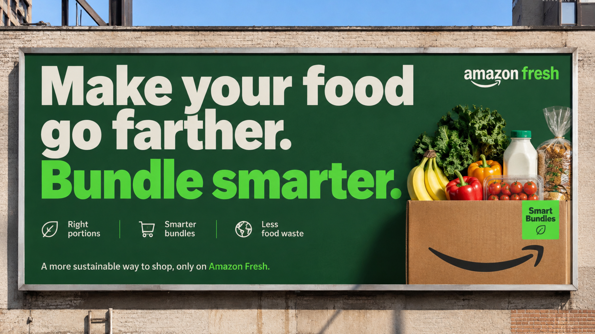

Amazon Fresh · Product design · 2026
Smart Bundles is an Amazon Fresh concept: ingredient bundles sized to what a household actually eats, plus a quick check-in that makes the next order fit better.
Built in 24 hours for the Digital Expression Fellowship, from one prompt: pick an existing digital ecosystem and design a climate-positive upgrade that fits inside it.
Problem
Food waste starts at checkout, not in the fridge.
Households buy more than they eat because default pack sizes don’t match how they cook. The waste is decided in the cart, long before anything spoils.
Solution
Three interventions inside the journey people already use.
Editable ingredient bundles sized to the household, kept together at checkout, and a one-tap check-in after delivery that makes the next bundle fit better.
Research
Waste is concentrated: the smallest group wastes the most.
A small group of shoppers throws away the most food, so defaults built around them do the most good.
Why Amazon Fresh
Amazon tried this with meal kits. They failed for the wrong reasons.
Amazon’s meal kits were cut over food waste, thin margins and low retention: a rigid, high-cost model, not a lack of demand. Fresh is still a strong place to try again. 70% of its shoppers already lean toward healthier choices (vs. 32% at the average grocer), same-day delivery reaches thousands of US cities, and Amazon’s net-zero 2040 pledge makes household waste a climate lever it already owns.
Where it leaks
Most waste happens after delivery, where Fresh can’t see it.
Once the order arrives, Fresh loses sight of what gets used, so nothing feeds back into the next order.
So the opportunity isn’t a better way to buy. It’s shifting Fresh from optimizing what people buy to optimizing how much they actually eat.
Core flows
Four touchpoints. One connected loop.
From discovery to the next order, smarter defaults fit into the shopping people already do.
Touchpoint 01
Discover bundles
Find ingredient combinations based on familiar shopping behavior, then open a bundle to see what’s included.
Touchpoint 02
Make it your own
Adjust portions and quantities before adding the bundle to the cart. Recommendations stay editable.
Touchpoint 03
Follow the delivery
Keep the familiar delivery experience, with the right-sized order on its way.
Touchpoint 04
Help the next order fit
Give optional feedback on what was too much or too little to inform future bundle sizes.
Design decisions
Every decision traces back to where the waste starts.
Decision 01
Research found47% of ~1,000 U.S. households shop as flexible planners.
Flexible and low-waste: the empty corner.
Meal kits lock people into recipes. Delivery apps are flexible but sell default pack sizes that over-buy. No one was both, so I kept regular grocery shopping and changed the default portions.
Decision 02
Research foundThe 13% who waste the most throw food out nearly 7× a week, against ~4.5× for everyone else, and portion control helps them most.
Right-sized by default, editable without penalty.
Bundles arrive sized to past orders instead of family packs. Any item can be swapped, removed, or adjusted, and the rest of the bundle keeps its portions. Meal planners and waste reminders were cut: they ask the most effort of the people least likely to give it.
Decision 03
Research foundU.S. households waste $1,300+ a year in uneaten food, and most of it spoils after delivery, outside Fresh’s view.
One optional tap after delivery.
A single “just right, mostly, too much” check-in replaces waste logging. It’s the only signal Fresh gets from the kitchen, so it has to cost almost nothing to give.
Launch
A new default needs a reason to try it, so I designed the launch too.
A tagline, a billboard, a logo morph, and recommendation cards introduce bundles where people already shop.

Reflection
How I’d know it works: people adopt it, less food spoils, and they reorder.
These are pilot targets, not measured results. Next I’d test the defaults with households, refine portions with real use, and measure whether the change lasts.
Takeaway
Checkout works best when it reflects what people actually consume, not just what they purchase.